Test report · egov-eservice
รอบ final (BUG_MODE ไม่ตั้ง · เปิดอัดวิดีโอ) · ผ่าน 51/51 · ดิบ: results.json · GIF 47 ไฟล์ (TC ที่ไม่มี GIF คือเทสต์ที่ตรวจ API/ไฟล์ล้วน ไม่มีหน้าจอให้อัด)
| TC | ผล | วินาที | ภาพการรัน |
|---|---|---|---|
| TC-AUDIT-01 เหตุการณ์และฟิลด์ใน Audit | ผ่าน | 1.9 | 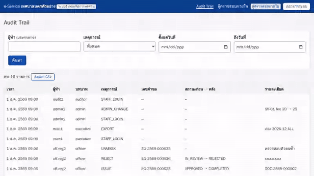 |
| TC-AUDIT-02 Audit แก้/ลบไม่ได้ (405) | ผ่าน | 0.4 | |
| TC-AUDIT-03 กรองช่วงวันที่ตามเวลาไทย | ผ่าน | 1.4 | 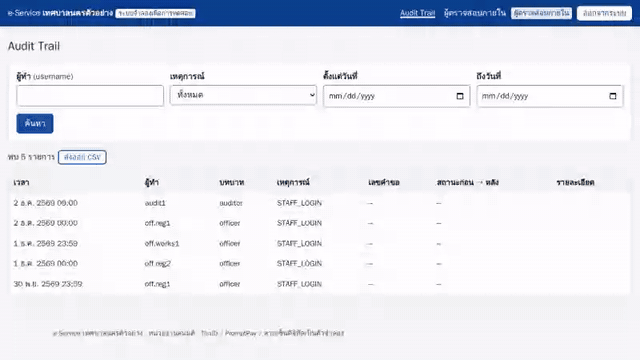 |
| TC-AUTH-01 เลขบัตร 13 หลัก + checksum | ผ่าน | 2.2 | 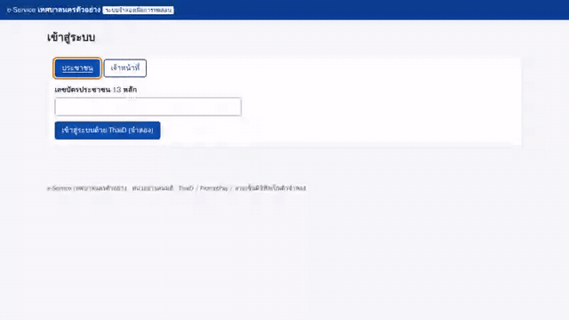 |
| TC-AUTH-02 OTP ผิด 3 ครั้งล็อก 15 นาที | ผ่าน | 1.6 | 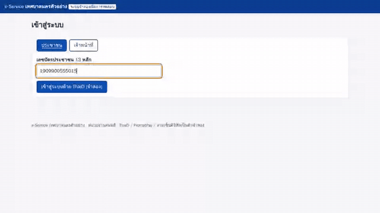 |
| TC-AUTH-03 ลงทะเบียนครั้งแรก | ผ่าน | 1.6 | 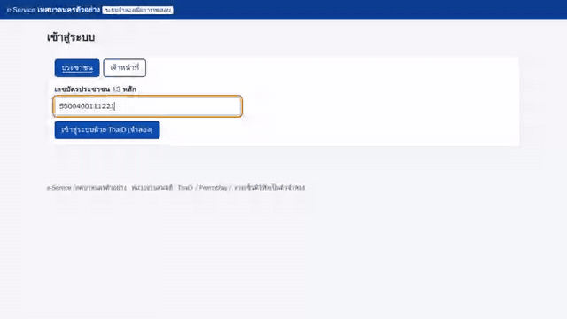 |
| TC-AUTH-04 เจ้าหน้าที่ SSO จำลองและหน้าตั้งต้น | ผ่าน | 3.0 | 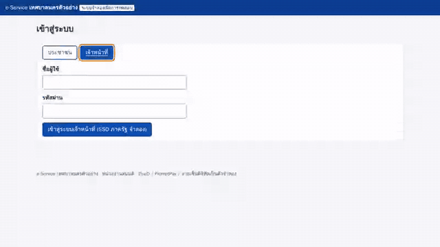 |
| TC-DASH-01 Dashboard ตัวเลขเริ่มต้น | ผ่าน | 0.5 | |
| TC-DASH-02 Dashboard ย้อนหลัง | ผ่าน | 1.1 | 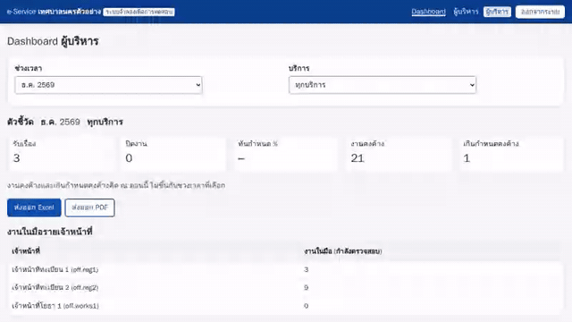 |
| TC-DASH-03 ส่งออก Excel/PDF เท่าหน้าจอ | ผ่าน | 1.0 | 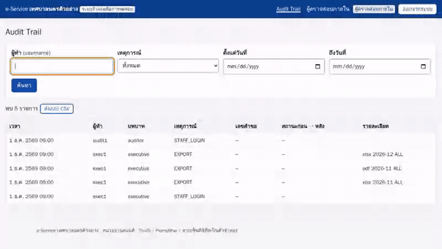 |
| TC-DASH-04 ค่าขอบ "ทันกำหนด" 16:29:59 / 16:30:00 / 16:30:01 | ผ่าน | 1.0 | |
| TC-DOC-01 ออกเอกสารและข้อมูลในเอกสาร | ผ่าน | 0.8 | |
| TC-DOC-02 ตรวจเอกสาร /verify | ผ่าน | 0.3 | 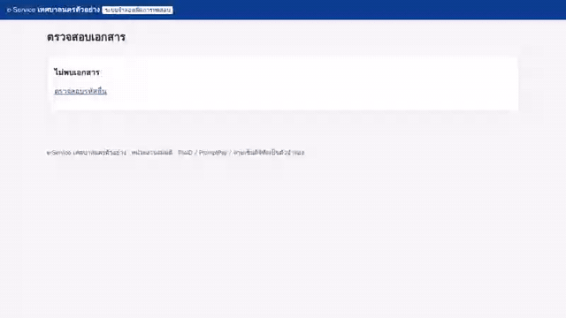 |
| TC-DOC-03 เอกสารหมดอายุและลายเซ็นไม่ตรง | ผ่าน | 1.7 | |
| TC-FEE-01 ค่าธรรมเนียม SV-01 / SV-02 / SV-03 | ผ่าน | 1.2 | 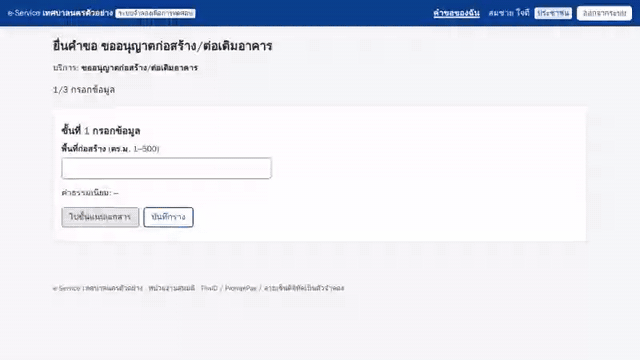 |
| TC-NFR-01 Responsive 375 / 768 / 1280 | ผ่าน | 4.1 | 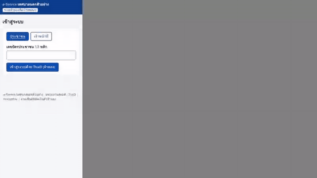 |
| TC-NFR-02 WCAG: axe + คีย์บอร์ด + label + สถานะไม่ใช้สีอย่างเดียว | ผ่าน | 8.1 | |
| TC-NFR-03 Health เวลาโหลด และผลซ้ำได้ | ผ่าน | 1.6 | |
| TC-NFR-04 เข้ารหัสข้อมูลส่วนบุคคลที่เก็บ (inspection) | ผ่าน | 0.2 | ไม่มีหน้าจอ (API/ไฟล์) |
| TC-NOTI-01 ผู้รับแจ้งเตือนตามระดับ | ผ่าน | 0.9 | |
| TC-NOTI-02 ไม่แจ้งซ้ำ ข้ามระดับ และขั้นรออนุมัติ/รอออกเอกสาร | ผ่าน | 2.8 | |
| TC-PAY-01 อายุ QR 15:00 | ผ่าน | 0.6 | 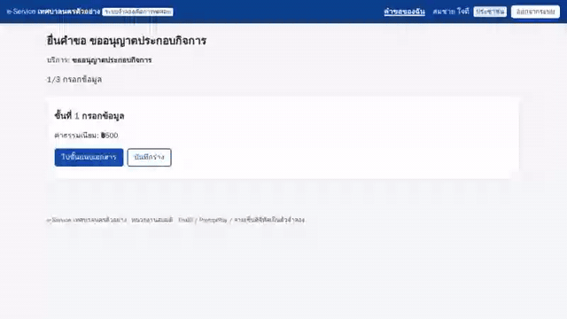 |
| TC-PAY-02 ยอดเงินและ callback ซ้ำ | ผ่าน | 0.2 | ไม่มีหน้าจอ (API/ไฟล์) |
| TC-PAY-03 ชำระพร้อมกัน เลขไม่ซ้ำ | ผ่าน | 0.4 | ไม่มีหน้าจอ (API/ไฟล์) |
| TC-PAY-04 เลขคำขอข้ามปี | ผ่าน | 0.9 | 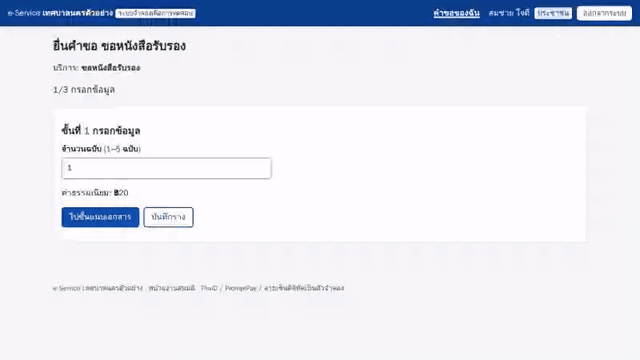 |
| TC-PDPA-01 ปิดบังเลขบัตรบนจอ | ผ่าน | 0.7 | 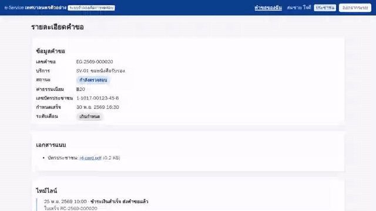 |
| TC-PDPA-02 API (JSON) ไม่ส่งเลขบัตรเต็ม | ผ่าน | 0.3 | ไม่มีหน้าจอ (API/ไฟล์) |
| TC-PDPA-03 แสดงเลขเต็มต้องมีเหตุผลและบันทึก Audit | ผ่าน | 1.4 | |
| TC-QUEUE-01 ลำดับคิวและขอบเขตแผนก | ผ่าน | 1.0 | 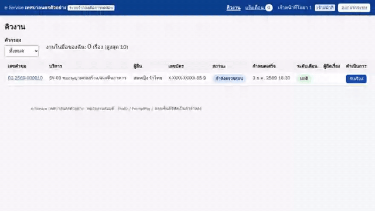 |
| TC-QUEUE-02 รับเรื่องซ้อน (พร้อมกันและต่อกัน) | ผ่าน | 1.0 | |
| TC-QUEUE-03 งานในมือสูงสุด 10 | ผ่าน | 2.5 | 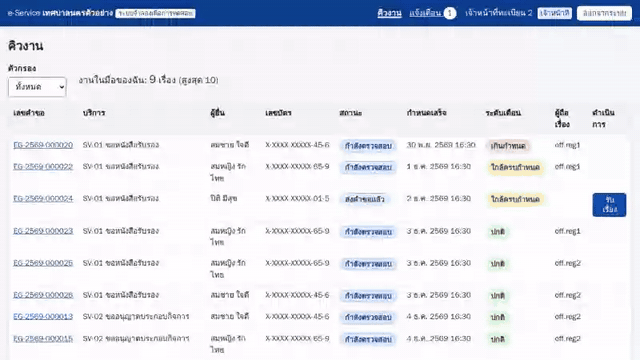 |
| TC-RBAC-01 ประชาชนเปิดคำขอคนอื่นไม่ได้ (IDOR) | ผ่าน | 0.3 | 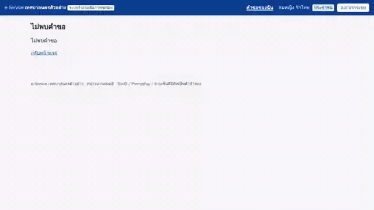 |
| TC-RBAC-02 เจ้าหน้าที่อนุมัติ SV-02 ไม่ได้ (ตรวจที่ API) | ผ่าน | 0.6 | 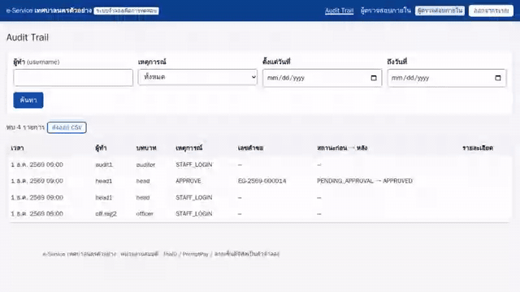 |
| TC-RBAC-03 ตารางสิทธิ์หน้า/API ตามบทบาท | ผ่าน | 4.9 | 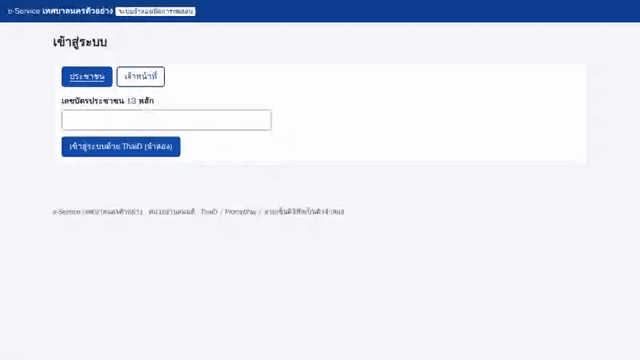 |
| TC-RBAC-04 ผู้ดูแลระบบ: บริการ วันหยุด ผู้ใช้ และยอดที่ล็อก | ผ่าน | 2.3 | 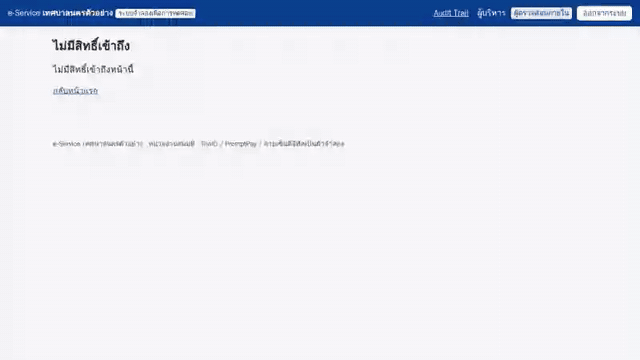 |
| TC-RBAC-05 สิทธิ์เปิด/ดาวน์โหลดไฟล์แนบ | ผ่าน | 1.4 | |
| TC-RBAC-06 ผู้ดูแลระบบ: ช่วงค่าที่ยอมรับ | ผ่าน | 1.8 | 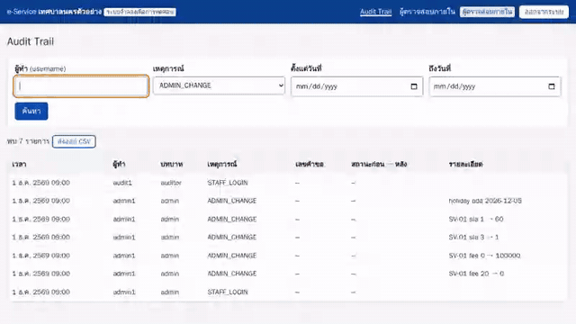 |
| TC-SLA-01 กำหนดเสร็จตามตารางวันที่ | ผ่าน | 2.6 | |
| TC-SLA-02 หยุดนับ SLA ระหว่างรอแก้ไข | ผ่าน | 2.3 | 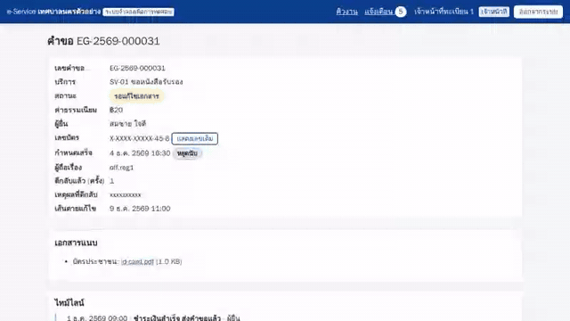 |
| TC-SLA-03 ระดับเตือน ปกติ / ใกล้ครบกำหนด / เกินกำหนด | ผ่าน | 3.3 | 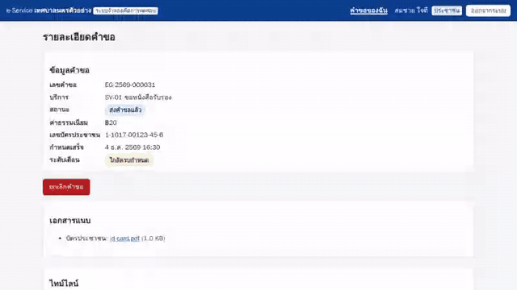 |
| TC-SUBMIT-01 ยื่นคำขอ SV-01 ครบวงจร | ผ่าน | 1.3 | 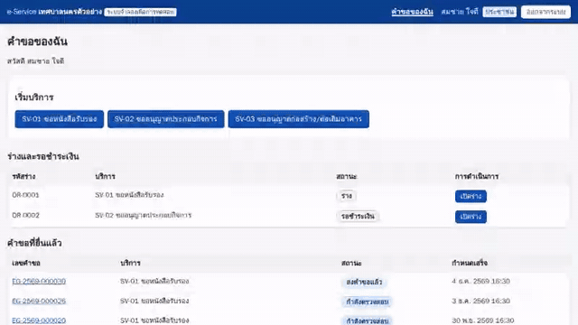 |
| TC-SUBMIT-02 เอกสารบังคับครบก่อนชำระ | ผ่าน | 1.5 | 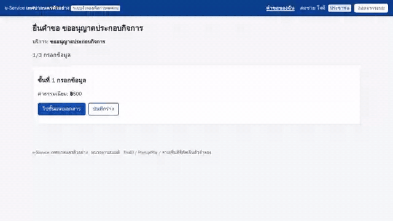 |
| TC-SUBMIT-03 ร่าง และการยกเลิก | ผ่าน | 2.3 | 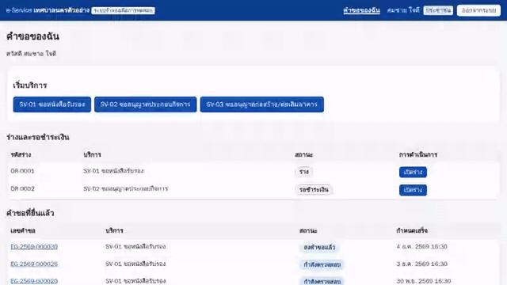 |
| TC-UPLOAD-01 ขนาดและจำนวนไฟล์ | ผ่าน | 5.3 | 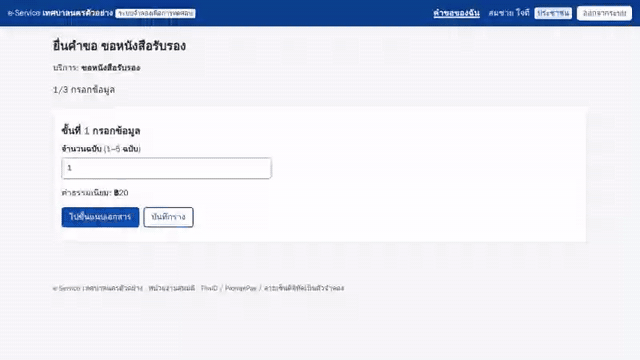 |
| TC-UPLOAD-02 ชนิดไฟล์จากเนื้อไฟล์ | ผ่าน | 2.6 | |
| TC-WORKFLOW-01 SV-01 อนุมัติ + ออกเอกสาร | ผ่าน | 0.9 | 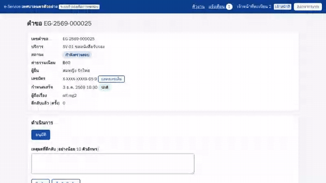 |
| TC-WORKFLOW-02 SV-02 ผ่านหัวหน้า | ผ่าน | 1.8 | 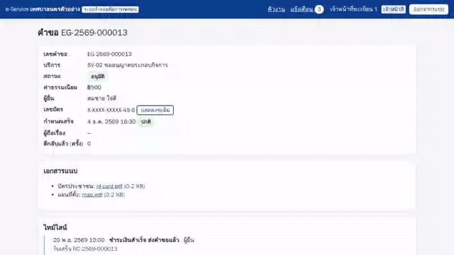 |
| TC-WORKFLOW-03 SV-03 สามขั้นตอน | ผ่าน | 1.7 | 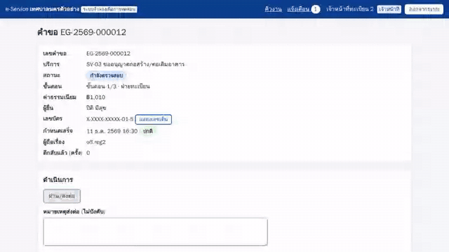 |
| TC-WORKFLOW-04 ตีกลับสูงสุด 2 ครั้ง และผลหลังครบ | ผ่าน | 2.4 | |
| TC-WORKFLOW-05 เหตุผล ≥ 10 ตัวอักษร (ตีกลับ / ไม่อนุมัติ) | ผ่าน | 2.1 | 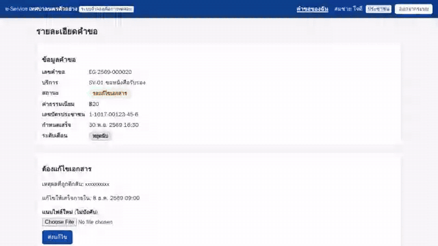 |
| TC-WORKFLOW-06 เวลาแก้ไข 168 ชั่วโมง | ผ่าน | 1.0 | 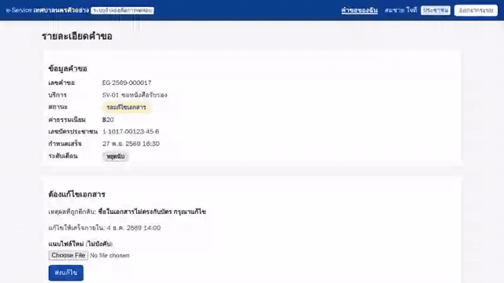 |